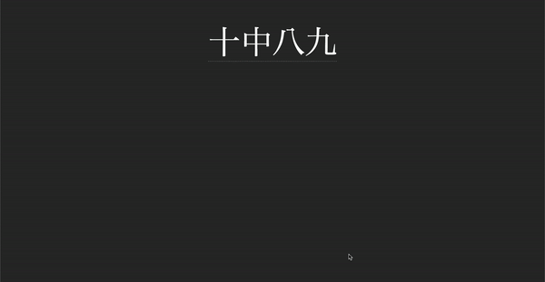

Immersion

Beginner immersion: an uphill battle
If you recall from section 1.3, I touched on something known as comprehensible input. This is input that is understandable at your level, where there’s just a few missing pieces of the puzzle every few sentences. With this sort of immersion, you subconsciously fill in the incomprehensible parts with educated guesses based on context, which is what makes this type of input so useful for the purposes of language learning.
Now you may have noticed a problem here. What do you do if you don’t have access to comprehensible input? As a complete beginner, there is no content that is easy. In fact, this is why people often fall into the endless cycle of reading from beginner resource to beginner resource. Though incomprehensible input is by no means useless—it does have its benefits and assists with learning—it is very difficult to get past that initial hurdle.
Failing to understand the content you want to enjoy inherently sucks unless you take a specific mindset to it—taking pleasure in the knowledge that you are making gradual progress, even if that progress is immediately imperceptible. However, it’s difficult to maintain this mindset all the time, so it isn’t reliable as the sole motivator for consistency—the number one key of mastering any skill!
So how can we make it so we don’t constantly dread having to parse through content that is difficult to understand?
The answer is actually very simple. Fun! Media can be entertaining for reasons other than language content. By choosing media that also has high entertainment value regardless of its language level, we are able to stay consistently engaged and motivated to continue our immersion. Then, as our language experience grows, we naturally find ourselves understanding more and more, and the once seemingly unattainable goal of finding comprehensible input has now become a given, with the goal rather shifting to finding content that is difficult enough to push us to continue learning.
Let's immerse!
To make Japanese less of a pain to read, you can use a free browser extension known as Yomitan. You can find a tutorial on how to use it here
To look up words individually, you can use Jisho.org, which is also availaible for your phone at on the playstore
Honestly, pick whatever you want. It can be any anime, movie, J-drama, novel, light novel, manga, visual novel, game or YouTube video. If you don't have anything in mind you can check out this spreadsheet: Japanese Media Recommendations. Just make sure you're actually interested in whatever you're choosing to immerse with!
How to immerse with listening:
Listening is almost entirely a top-down, "intuitive" approach. We don't want to think too hard over things when we are listening. Go with the flow until you find a really good oppportunity to pause and look something up.
There are certain levels to listening. Level one would be free-flow listening, where you let the listening flow without looking things up. Level two would be looking things up that pop out at you but still letting the listening play. Level three would be pausing at every single unknown word and looking them up.
In the beginner to intermediate stages, listening is entirely level one and level two listening. Don't think too hard about it and cherish all the little opportunities you get.
"Active" and "Passive" listening:
Active listening is when you are paying full attention to your listening. You are engaging with all aspects of it like looking at the screen and listening to the anime. This is the type of listening where you are making the most gains.
Passive listening is where you do something else and have the listening on in the background. This helps when you intermittently listen in on your listening for brief moments, it can hugely benefit you if you have a busy lifestyle. I actually recommend doing passive immersion to fill in the gaps where you're usually not doing Japanese.
How to immerse with reading:
In contrast to listening, reading is sort of a bottom-up, take-your-time, "analytical" approach. You can take as much time as you'd like reading sentences and looking up words. The process loop is essentially read → look up word → reaction → read more → look up word → (repeat). For a while, it is going to seem like banging your head against a wall, but this is really just how you're going to build up reading ability.
Reading content with a visual component such as anime with Japanese subtitles, manga and visual novels can help ease you into reading.
In the beginner stage I recommend a 7:3 listening to reading ratio. This is mainly because listening is the most natural form of the language, so I believe it is essential to prioritise it to make your brain process Japanese more naturally.You can start to lower the amount of listening to an equal 5:5 ratio when you get better at Japanese.
There are many tools out there that help streamline immersion, all of which can be found here.
You will continue immersing, learning grammar, and doing Kaishi 1.5k until you learn all 1.5k words, after that, you're ready to start mining.
Let's mine!
Mining is the process of building your own Anki deck with your own Anki cards from sentences you encounter while reading or watching Japanese content.
The videos on the left will help set you up for mining. You will continue sentence mining until you hopefully get fluent!
Using a note type of either: Lapis (as seen on the left) or Jp Mining Note is recommended.
Choosing a high quality note and setting it up properly i nthe beginning will save you a lot of pain later!